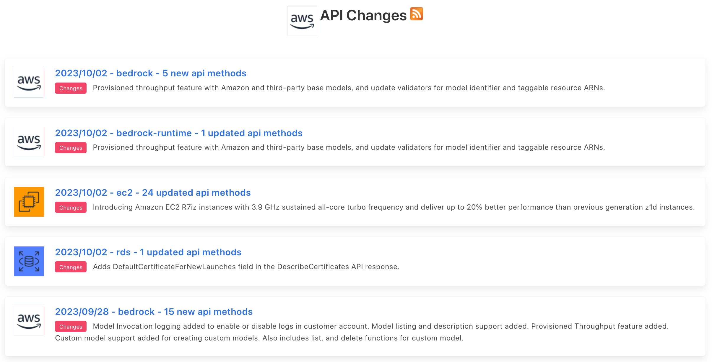
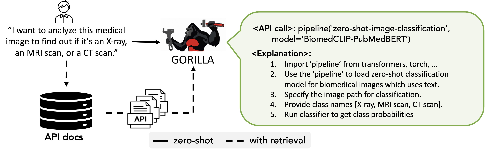
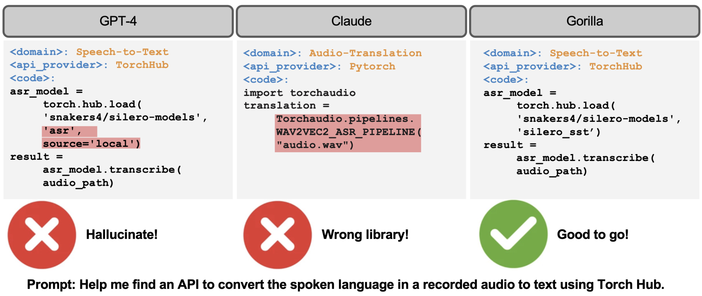

Pretrained Language Models (LLMs) need instruction tuning to better align with human incentives. These methods both improve the model’s behavior and accuracy when they are trying to answer questions for a specific domain. However, traditional instruction tuning has limitations regarding adaptability, dependency on the in-context examples, and the potential to hallucinate. We introduce "retriever-aware training," a new methodology that holds the promise of addressing some of these challenges. Let's dive into the details of that.
At its core, instruction tuning allows LLMs to generate responses based on specific instructions embedded within the prompts. However, this approach has its limitations:
With the above challenges in mind, retriever-aware training was introduced.
The principle behind this method is to append additional supporting documentation to the user's prompt,
such as "Use this API documentation for reference:
However, the promise of retriever-aware training is not fully utilized yet in reality. This is mainly because the accuracy of the retriever is not good enough. In other words, the recall for the retriever has become a bottleneck for the final performance of the LLM. Imagine the model would easily get confused if it got the question to “look up whether in Berkeley” but with the supporting documents of “biography of Albert Einstein”. Thus, balancing between the recall of the retriever and the frequency of updating LLMs is a choice to make.
Wrapping Up As with all innovations, retriever-aware training comes with its set of pros and cons. But its introduction marks an exciting shift towards creating LLMs that are more adaptable, accurate, and less prone to errors. As we continue to refine this methodology, there's no doubt that the future of LLM training is brimming with potential.

APIs evolve frequently! For example, there were 31 API modifications for AWS APIs just yesterday.
APIs are known to evolve frequently - more frequently than it is possible to re-train LLMs. So, how can LLMs keep up with this, and not serve the user out-lawed APIs? To handle this, Gorilla, can be used for inference in two modes: zero-shot and with retrieval. In zero-shot, during inference, user provides the prompt in natural language. This can be for a simple task (e.g, "I would like to identify the objects in an image"), or you can specify a vague goal, (e.g, "I am going to the zoo, and would like to track animals"). This prompt (with NO further prompt tuning) is fed to the Gorilla LLM model which then returns the API call that will help in accomplishing the task and/or goal. In retrieval mode, the retriever first retrieves the most up-to-date API documentation stored in APIZoo, an API Database for LLMs. Before being sent to Gorilla, the API documentation is concatenated to the user prompt along with the message "Use this API documentation for reference:" The output of Gorilla is an API to be invoked. The retriever aware inference mode, enables Gorilla to be robust to frequent changes in APIs! We have open-sourced our APIZoo, and welcome contributions from the community!

Gorilla, can be used for inference in two modes: zero-shot and with retrieval. In zero-shot, the prompt is directly fed to the Gorilla LLM model. In retrieval mode, the retriever first retrieves the most up-to-date API documentation stored in APIZoo.
If you are deploying LLMs in production today, you might be augmenting your model with retrievers such as in Retriever Augmented Generation (RAG) paradigms. Given, most LLMs today are used with retrievers, shouldn't the training recipe for the LLM consider this!! In Gorilla, we consider retrievers to be first class citizens, and train our models to be retriever aware. If you are thinking about integrating LLMs with llamaindex, vector databases such as Weviate, etc check out our blog post on Retrieval Aware Training (RAT) where we teach LLMs to "work-together" with retrievers!

Examples of API calls. In this example, for the given prompt GPT-4 presents a model that doesn't exist, and Claude picks an incorrect library. In contrast, our Gorilla model can identify the task correctly and suggest a fully-qualified API call.
Hallucination is the center of discussions for all things LLMs. In the context of API generation, hallucination can be defined as the model generating API calls that do not exist. An LLM generation can be in-accurate or it could be hallucinated. One does not mean the other. For example, if the user asks for a classifier for medical images, if the model generates a Stripe API call for a image classifier - it is hallucination, since it doesn't exist! On the other hand, if the model recommends to use the Stripe API for checking your balance, it is an incorrect usage of the API, but at least not made up (noh-hallucinated). In our blog we describe Gorilla's innovative approach of using Abstract Syntax Trees (ASTs) to measure hallucination of the generated API calls. Though not generalizable to all tasks, to the best of our knowledge, Gorilla is the first to measure and quantify hallucination for LLM generations!